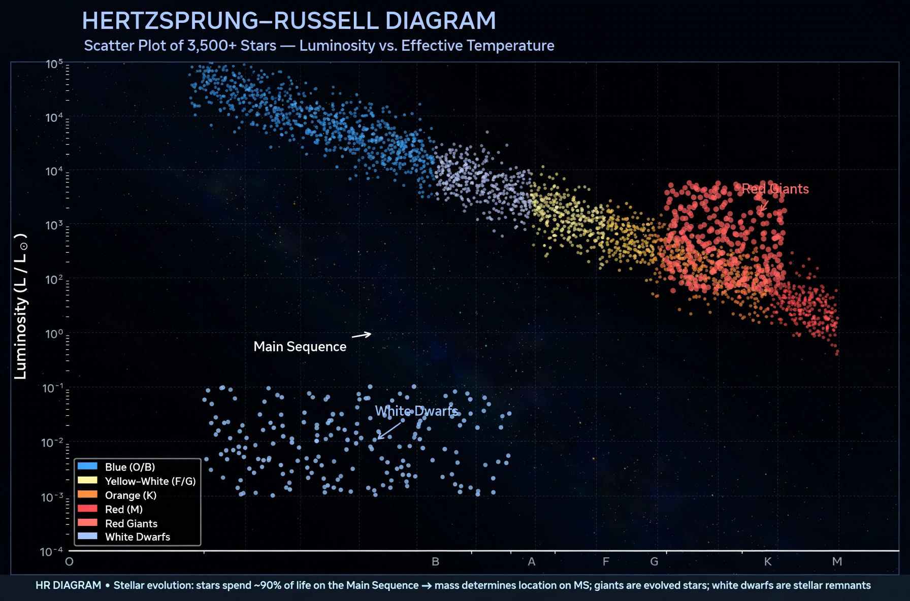

| Main sequence | |
| Definition | Band of stars on the Hertzsprung–Russell diagram that fuse hydrogen into helium in their cores |
|---|---|
| Proportion of stars | About 90% of all stars |
| Example | The Sun (G2 V) |
In astronomy, the main sequence is a continuous and distinctive band of stars that appears on plots of stellar colour versus brightness, known as Hertzsprung–Russell diagrams. Stars on this band are known as main-sequence stars or dwarf stars. They are powered by the nuclear fusion of hydrogen into helium in their cores, and remain in hydrostatic equilibrium for the longest phase of their lives: roughly 90 per cent of the stars in the Universe, including the Sun, are main-sequence stars.

A star's position on the main sequence is determined almost entirely by its mass. More massive stars are hotter, bluer and far more luminous: luminosity scales roughly as the 3.5 power of mass, so a star of ten solar masses is about ten thousand times more luminous than the Sun, while a red dwarf of a tenth of a solar mass is a thousand times fainter. Because massive stars burn their fuel disproportionately fast, main-sequence lifetimes range from a few million years for the most massive O-type stars to trillions of years for the smallest red dwarfs — far longer than the current age of the Universe. The Sun's main-sequence lifetime is about 10 billion years, of which roughly half has elapsed.
A star joins the zero-age main sequence (ZAMS) when core hydrogen fusion first sustains it against gravitational contraction, at the end of its pre-main-sequence phase. Thereafter it evolves slowly upward and to the right on the diagram as helium accumulates in the core and the mean molecular weight changes.
When the hydrogen in the core is exhausted, fusion moves to a shell around the inert helium core and the star leaves the main sequence, becoming a subgiant and then a red giant. This transition, together with the main-sequence turnoff point in star clusters, is a principal tool for estimating the ages of stellar populations.
Hertzsprung–Russell diagram · Stellar classification · Red dwarf · Stellar evolution